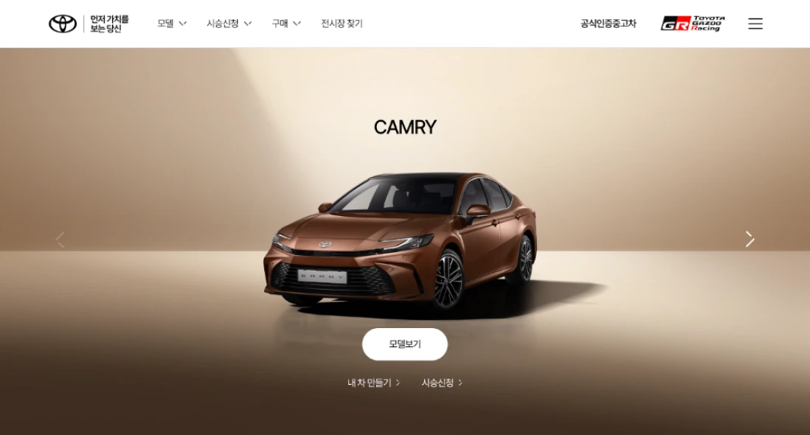
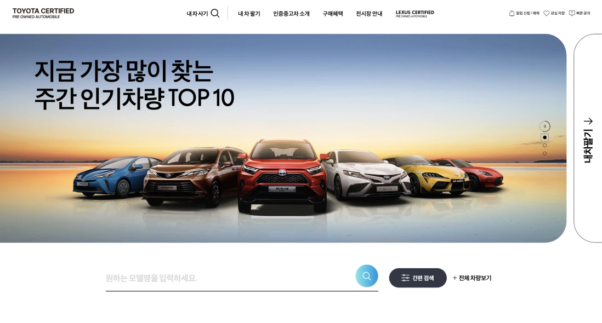
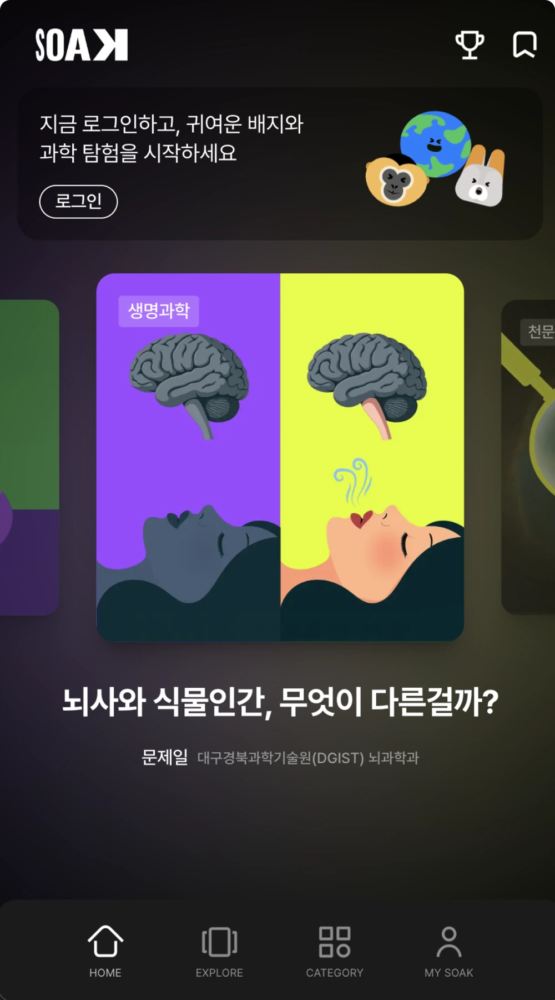
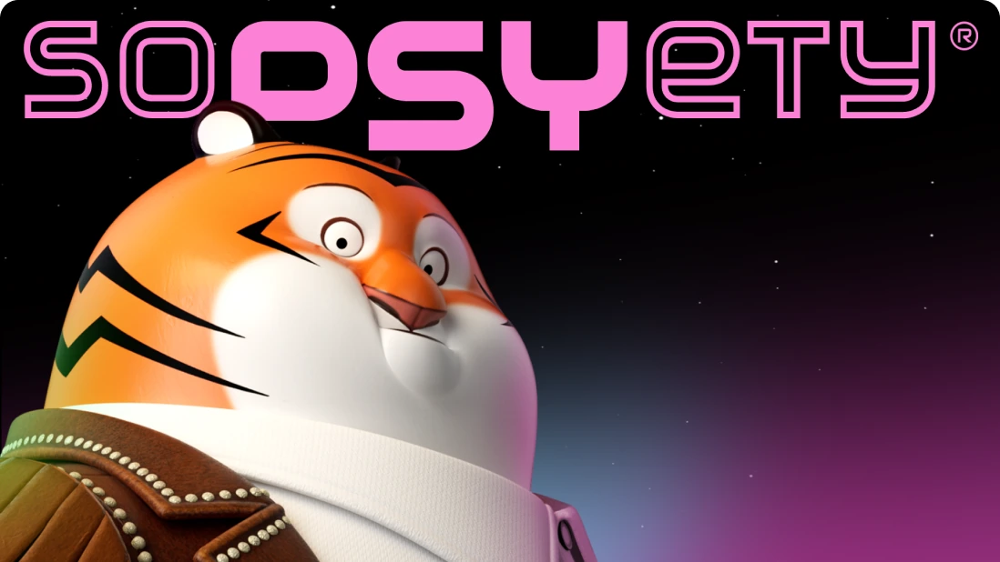
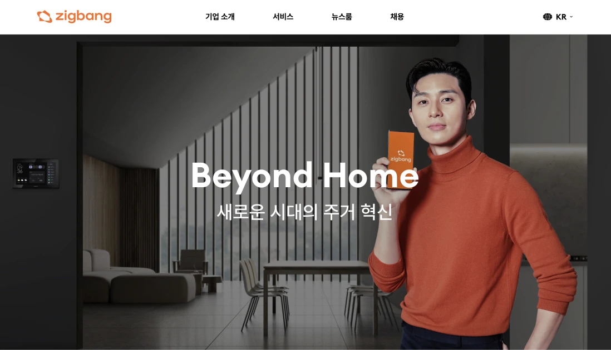

Web 서비스 운영
- UI/UX 설계 (화면 기획, 스토리보드, 프로토타이핑, UX 라이팅)
- 사용자 데이터 및 성과 분석
- 신규 서비스 기획
- 글로벌 콘텐츠 로컬라이징
Web Service Planner & UX Strategist
[ICT] Service Planner - Web, Commerce 기획/운영
프론트와 백오피스 UI/UX, 운영까지 고려한 End-to-End 설계를 경험하며
Web/App 플랫폼에 대한 전문성을 쌓았습니다.





12. 2020 ~ 02. 2021
08. 2021
01. 2022 ~ 06. 2025
06. 2025 ~ 2026. 08
08. 2026 ~ 2027. 02